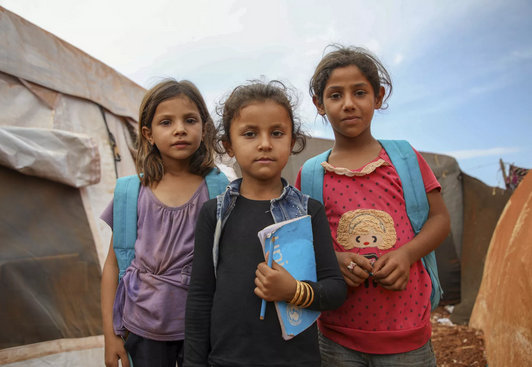

Crisis and emergency contexts in early childhood education include experiences such as climate-related disasters, family violence, displacement, and other sudden emergencies. These contexts are increasingly relevant in contemporary Australian society, where bushfires, floods, and extreme weather events have become more frequent, and family violence remains a significant social issue. According to the Australian Institute of Health and Welfare, approximately 1 in 6 Australian children are exposed to family violence, while natural disasters increasingly disrupt family and community stability (Parrila & Mäntyjärvi, 2023).
Sociological theories provide frameworks for understanding how crises impact children. Bronfenbrenner’s Ecological Systems Theory emphasizes that environmental disruptions in the microsystem (family), mesosystem (community), and macrosystem (societal structures) can profoundly affect child development (Bronfenbrenner, 1979). Resilience Theory underscores the capacity of children to adapt positively despite adverse circumstances, highlighting the role of protective factors such as supportive relationships and community resources (Van Breda & others, 2001). Contemporary research demonstrates that children exposed to crises may experience trauma, stress, and disruptions to learning and social development, yet supportive early childhood environments can buffer these effects.
Crises are diverse and evolving. Climate emergencies, including bushfires, floods, and heatwaves, can lead to temporary displacement, loss of home or belongings, and heightened anxiety for children and families. Family violence and sudden displacement, such as that experienced by refugee or asylum-seeking families, create immediate threats to safety and long-term emotional challenges. Early childhood educators must understand the intersectionality of these crises and provide responsive, trauma-informed, and culturally sensitive support to promote children’s resilience and wellbeing.
Children exposed to crisis and emergency contexts face a range of developmental, emotional, and social challenges. Exposure to trauma or sudden loss can result in anxiety, sleep disturbances, behavioural difficulties, regression in developmental milestones, and difficulties in forming secure attachments (Bowlby, 1980). Children affected by family violence may display heightened aggression, withdrawal, or hypervigilance, which can affect learning engagement and peer relationships.
Families navigating crises often experience stress, instability, and social isolation, which can limit their capacity to provide consistent support for children. Displacement due to natural disasters or family violence can disrupt routines, social networks, and access to essential services, further exacerbating children’s vulnerability. Early childhood services play a critical role in providing stability, continuity, and nurturing relationships, enabling children to regain a sense of safety and control.
Australian social policies and initiatives aim to support children and families affected by crises and emergencies:
Data from the Australian Bureau of Statistics (2021) indicate that climate-related emergencies affected over 500,000 Australians in 2021–22, highlighting the growing relevance of emergency preparedness in early childhood services. Policies and frameworks influence practice by guiding risk assessment, emergency planning, trauma-informed responses, and referral pathways to specialist services. Educators must remain informed of these policies to safeguard children and families effectively.
Evidence-based strategies for supporting children and families in crisis and emergency contexts include:
Key organisations and professionals play critical roles in supporting children and families affected by crises:
Collaborating with these organisations ensures that early childhood services can provide timely, coordinated, and specialist support during and after crises.